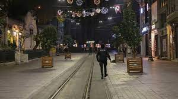
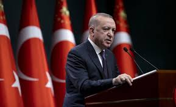

TAM KAPANMA OLACAK MI
Cumhurbaşkanlığı Kabinesinde alınan kararlar doğrultusunda halihazırda uygulanmakta olan kısmi kapanma tedbirlerine yeni önlemler eklenerek tam kapanma dönemine geçileceği hatırlatılarak, 29 Nisan Perşembe saat 19.00'dan itibaren 17 Mayıs Pazartesi saat 05.00'e kadar sürecek tam kapanma döneminde ülke genelini kapsayacak şekilde tedbirlerin alınması gerektiğinin değerlendirildiği ifade edildi.
Sokağa Çıkma Kısıtlaması Hafta içi hafta sonu ayrımı olmaksızın 29 Nisan 2021 Perşembe günü saat 19.00'da başlayıp 17 Mayıs 2021 Pazartesi günü saat 05.00'de bitecek şekilde tam zamanlı sokağa çıkma kısıtlaması uygulanacak.